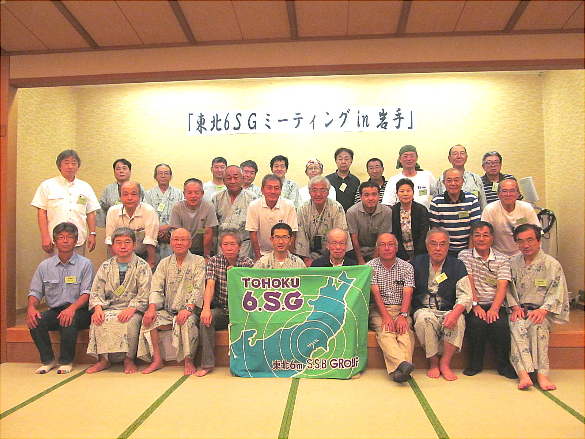

|
◎ 第46回東北6m SSB Group Meeting in 岩手（一ノ関）大会 (26-27.Aug.2017)
第46回東北6SGミーティング・岩手大会は、去る8月26日〜27日の両日、岩手県一ノ関の「かんぽの宿 一関」で開催されました。
東北6SGは、例年秋に開催されるミーティングですが、今年は一ヶ月早い8月の開催となりました。
一関市は岩手県南部・宮城県北部の「中東北の拠点都市」として、経済・文化・教育の中心となっています。宮城、秋田の両県に隣接し、市内には3県にまたがる栗駒山、猊鼻渓(げいびけい）や厳美渓(げんびけい)の名勝地、一関温泉郷など観光地があり、世界遺産登録のまち「平泉」の中尊寺金色堂、毛越寺などの他、三陸方面への観光拠点にもなっています。
今年は秋のシーズンに、この地で「将棋大会」の開催が予定されているため、日程が取れず早めの開催となってしまったとのこと。例年なら、8月最終週は東京・有明で「ハムフェア」が開催される日程なのですが、今年は会場の都合で一週遅れとなるため、6SGの大会がこの時期に割り込んだ形となりました。
今年の異常気象で長雨の続いた東北地方でしたが、6SGの開催された両日は、快晴に恵まれ、ミーティング終了後の名所めぐりには絶好の日和となりました。
今回はJA1、JA2、JA6、JA8から33人の参加者で賑わいました。
初日の26日(土)は、”懇親会”の前に参加者全員の記念撮影の後、恒例の”宴会アイボール”QSOを楽しみました。
翌27日(日)の講演会は、定刻の9時からJA7QVI/平間さんによる「2017夏 50MHz DXを楽しむ」と題して、EsシーズンのWSJTによる北米、カリブ海やヨーロッパ、アフリカとのQSOの模様が紹介されました。
続いてJO1PSX/柴さんによる「最近の50MHz帯の八木アンテナ」と題して、最近の6mマンに注目されている、英国製のLFAアンテナの紹介を、7ELを2組輸入して、実測した詳細な結果を元に、動作例が紹介されました。
最後に、次回の大会の開催地となった宮城県の代表に、岩手大会の幹事役から「6SG・大会旗」の引継ぎが行われ、岩手大会は昼頃に無事終了しました。

（2017年・岩手大会の参加者）
[第46回 東北6SG・岩手大会参加局]
JA7AHK(宮城) JA7WSZ(福島) JA7CSS(秋田) JH7BRY(岩手) JA8JPE(札幌) JF1UMK(千葉) JR2HCB(愛知)
JA7MIT(宮城) JH7APD(福島) JH7VTE(秋田) JH7XRZ(岩手) JA8XRN(千歳) JO1PSX(千葉) JA1RJU(東京)
JA7PRV(宮城) JH7MQU(福島) JK7IKU(秋田) JR7AIW(岩手) JJ8NNR(幕別町) JH1WHS(埼玉) JL1PND(東京)
JA7QVI(宮城) JH7WCF(福島) JA7KHQ(青森) JA7LKA(岩手) JM1OAX(千葉) JH1WHS/XYL JH7IPR(大分)
JH7WER(宮城) JI7WTK(青森) JL7IWF(岩手) JF7ELG(千葉)
JP7EIP(宮城)
***************************************************************************************************
|